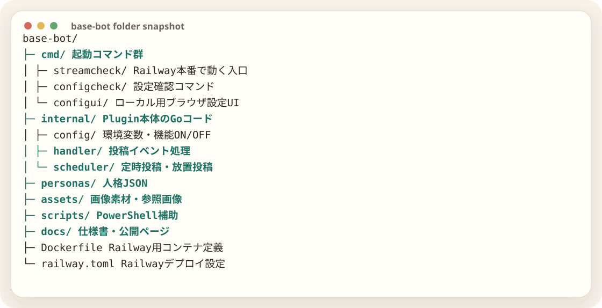

base-botの構成
Plugin本体はGoで動く。cmd が入口、internal が処理本体、personas が人格、assets が素材、scripts が作業補助という分け方。

処理の流れ
mixi2からイベントを受け取り、handlerで判定し、必要に応じてOpenAIで返信文を作り、mixi2 APIへ返す。定時投稿や放置投稿はschedulerが担当する。
mixi2 Event投稿・参加
handler判定
OpenAI生成
mixi2 API返信
scheduler定時処理
人格と素材
人格は personas に置き、画像参照や素材は assets に置く。これにより、本体コードを変えずにキャラだけ差し替えられる。